BLOG: Using Oracle Big Data Spatial and Graph and Oracle Big Data Lite VM for Multimedia Analytics (Facial Detection, Optical Character Recognition, and QR/Barcode Detection)
David Bayard, Oracle Big Data Pursuit Team
April 2016
Multimedia Analytics with Oracle Big Data Spatial and Graph
In this blog, we will explore how to use and extend the new Multimedia Analytics (MMA) framework that ships with the Oracle Big Data Spatial and Graph (BDSG) product. We will show how we can leverage the BDSG Multimedia Analytics framework to help us do things like facial recognition, optical character recognition, and barcode/QR detection.
Note: This blog build upon some of the work in our previous blog about doing Barcode and QR Detection with the Big Data Lite VM. You might benefit from reading the previous blog before continuing. The previous blog is available here: https://blogs.oracle.com/datawarehousing/entry/using_spark_scala_and_oracle
Getting Started with Oracle Big Data Spatial and Graph on the Oracle Big Data Lite VM:
This demonstration uses the Oracle Big Data Lite VM version 4.4, which is available here: http://www.oracle.com/technetwork/database/bigdata-appliance/oracle-bigdatalite-2104726.html . Version 4.4 of the VM includes CDH 5.5 and Oracle Big Data Spatial and Graph version 1.1.2. You may not be familiar with Oracle Big Data Spatial and Graph; if so, you can find more information at http://docs.oracle.com/cd/E69290_01/doc.44/e67958/toc.htm . This blog will focus on the multimedia analytics framework, which is Chapter 6 in the previous link.
Obviously, your first step is to download the Oracle Big Data Lite VM (version 4.4 or higher). Once you have the Big Data Lite VM downloaded, imported, and running, then click on the “Refresh Samples” icon on the VM desktop to refresh the samples. At this point, you should find the files needed for this blog under your /home/oracle/src/Blogs/BDSG_Barcode directory.
[Note: If you want to get access to the files referenced in
this blog outside of the Oracle Big Data LiteVM, you can find them here: https://github.com/oracle/BigDataLite/tree/master/Blogs/BDSG_Barcode
]
Now, run setup.sh
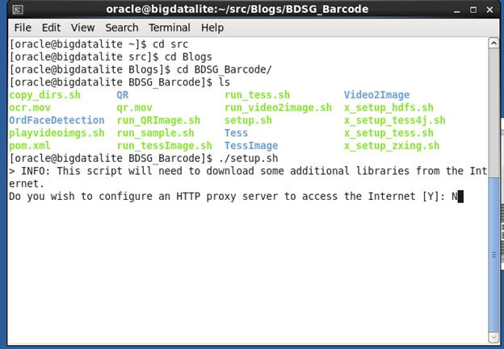
The setup.sh script will configure the Big Data Lite VM for
this blog by first getting the java libraries needed by ZXing (which is an
open-source Barcode/QR detection library). Then it will proceed to setup Tesseract,
which is a C++ open source library for Optical Character Recognition. Next, we
grab the Tess4J java libraries that make it easy to call Tesseract from java.
Finally, we copy a couple of sample videos into HDFS. Review the setup.sh
script if you are curious about the specific details and commands.
Running the basic sample from BDSG Multimedia Analytics
Now that we have click on Refresh Samples and run setup.sh,
our first activity will be to run a Facial Detection sample that ships with Oracle
Big Data Spatial and Graph’s Multimedia Analytics feature. We will try to
identify the faces from this video (which is pretty funny, so check it out with
the sound on): https://www.youtube.com/watch?v=Qz8bRyf1374&list=PL0DF9A83456FF4351&index=3
You can learn more about the Facial Detection sample here: http://docs.oracle.com/cd/E69290_01/doc.44/e67958/GUID-4B15F058-BCE7-4A3C-A6B8-163DB2D4368B.htm#GUID-3C6B70D7-8AE9-4580-AE1C-7F8F15093F3E
The facial detection sample leverages the open source OpenCV
libraries. You can read more about OpenCV’s functionality for facial
recognition here: http://docs.opencv.org/2.4/modules/contrib/doc/facerec/facerec_tutorial.html
For this sample, the Big Data Lite VM has already been
trained to detect the faces of 4 different individuals (you can re-run the
training with the /home/oracle/src/samples/mma/facetrain/trainface_bdl.sh script
if you are interested). The set of training images is located at /u01/oracle-spatial-graph/multimedia/example/facetrain/faces/bigdata
. Below are the training images for individual #4.

For this blog, let’s invoke the multimedia analytics
framework to do facial detection using our trained facial data against our
sample video (which is stored locally on the VM at /u01/oracle-spatial-graph/multimedia/example/video/bigdata.mp4
). To do so,
$ cd /home/oracle/src/samples/mma/analytics
$ hadoop fs -rm -R voutput_image
$ ./runjob_bdl.sh
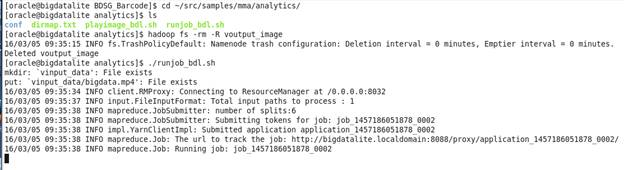
Notice that a map-reduce job is started. The multimedia
analytics framework provides an extensible map-reduce job that we can customize
to do various kinds of image analytics.
When the map-reduce job finishes, we can run the script playimage_bdl.sh
(located at /home/oracle/src/samples/mma/analytics ) to see what faces it
detected.
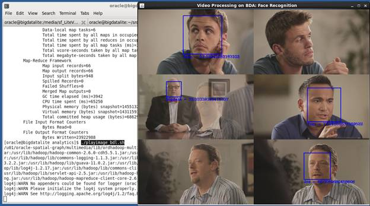
When done, close the image window and type ctrl-c in the
terminal window to get back to the terminal prompt.
Building a simple custom OrdFrameProcessor for the framework
Now that we’ve seen a working example, let’s look at what it
will take to build our own. As we noted above, the multimedia analytics
framework provides an out-of-the-box map-reduce program to extend. The main
way you will extend the framework is by writing your own implementation of the OrdFrameProcessor
class (Read more about extending the framework here: http://docs.oracle.com/cd/E69290_01/doc.44/e67958/GUID-4B15F058-BCE7-4A3C-A6B8-163DB2D4368B.htm#BDSPA-GUID-090BD058-396D-41F8-814E-D407DF0941F6
and here: http://docs.oracle.com/cd/E69290_01/doc.44/e66533/oracle/ord/hadoop/mapreduce/OrdFrameProcessor.html
).
Our first OrdFrameProcessor will be very basic; it will
simply take the individual images passed in to it and pass them along. In
essence, this example will leverage the framework to convert a video into a
series of images.
Before continuing, let’s run this simple example by
executing the run_video2image.sh script in the /home/oracle/src/Blogs/BDSG_Barcode
directory.
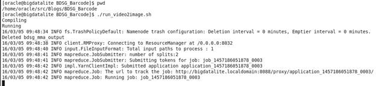
When the framework’s map-reduce job completes, enter Y to
view the results…
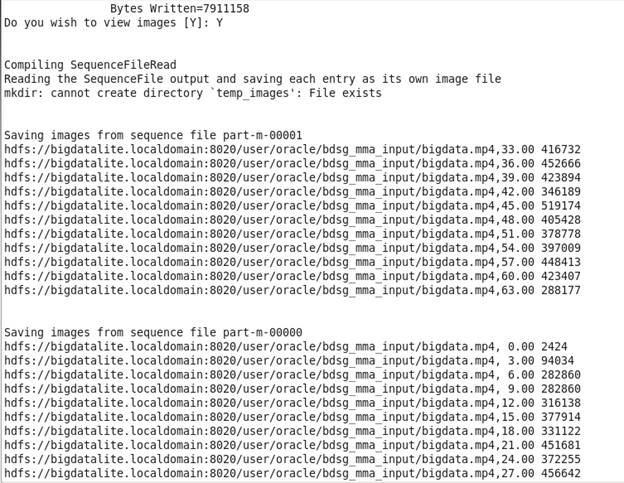
This will launch a script (save_images.sh) that will save
the output images (which by default were written to set of SequenceFiles on
HDFS) to the local linux file system.
Then it will launch the linux “xdg-open” utility to let you
browse the individual image files. Use the Next and Previous arrows to
navigate amongst the images. NOTE: the first image will be black because the
video starts out with a black image; simply click the Next arrow to see the
images as expected.
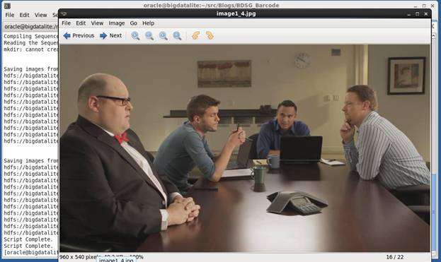
Let’s look at the code:
import oracle.ord.hadoop.mapreduce.OrdFrameProcessor;
import oracle.ord.hadoop.mapreduce.OrdImageWritable;
import org.apache.hadoop.conf.Configuration;
import org.apache.hadoop.io.Text;
import java.awt.image.BufferedImage;
public class VideoToImage
extends OrdFrameProcessor {
private Text m_frame_key_text = null;
private Text m_frame_value_text = null;
private OrdImageWritable m_frame_image = null;
public VideoToImage(Configuration conf) {
super(conf);
}
/**
* Implement the processFrame method to process the key-value pair, an image,
* in the mapper of a MapReduce job.
*/
@Override
public void processFrame(Text key, OrdImageWritable value) {
if (m_frame_key_text == null ||m_frame_value_text == null || m_frame_image == null) {
m_frame_image = new OrdImageWritable();
m_frame_key_text = new Text();
m_frame_value_text = new Text();
}
m_frame_key_text.set(key);
//this is where we do our custom code.
//In this example, do a simple identity map. Take the image and return it.
BufferedImage bi = value.getImage();
m_frame_image.setImage(bi);
}
/**
* Implement the getKey method to return the key after processing an image
* in the mapper.
*/
@Override
public Text getKey() {
return m_frame_key_text;
}
/**
* Implement the getValue method to return the value after processing an
* image in the mapper.
*/
@Override
public OrdImageWritable getValue() {
return m_frame_image;
}
}
Notice that the class extends OrdFrameProcessor. And notice
that we defined the types of the Keys and Values that are passed in and out of
the class. In this example, the input and output keys are both Text while the
input and output values are both OrdImageWriteable.
Also notice the implementation of the processFrame method.
This method reads the value being passed in (which is an OrdImageWriteable that
can be converted to a regular java BufferedImage via
OrdImageWriteable.getImage). Then it stores the BufferedImage as an
OrdImageWriteable (via OrdImageWriteable.setImage). Essentially, this code
demonstrates how to convert from BufferedImage to OrdImageWriteable and back.
Beyond writing our OrdFrameProcessor, we also need to setup
a configuration file that tells the framework’s map-reduce job about our custom
code. Here is what the configuration file looks like:
<?xml
version="1.0" encoding="UTF-8"?>
<configuration>
<!--Framework properties -->
<property>
<name>oracle.ord.hadoop.numofsplits</name>
<value>2</value>
</property>
<property>
<name>oracle.ord.hadoop.frameinterval</name>
<value>3</value>
</property>
<property>
<name>oracle.ord.hadoop.inputtype</name>
<value>video</value>
</property>
<property>
<name>oracle.ord.hadoop.outputtypes</name>
<value>image</value>
</property>
<property>
<name>oracle.ord.hadoop.ordframegrabber</name>
<value>oracle.ord.hadoop.decoder.OrdJcodecFrameGrabber</value>
</property>
<property>
<name>oracle.ord.hadoop.ordframeprocessor</name>
<value>VideoToImage</value>
</property>
<property>
<name>oracle.ord.hadoop.ordframeprocessor.k2</name>
<value>org.apache.hadoop.io.Text</value>
</property>
<property>
<name>oracle.ord.hadoop.ordframeprocessor.v2</name>
<value>oracle.ord.hadoop.mapreduce.OrdImageWritable</value>
</property>
</configuration>
Notice that in the configuration file, we specify our custom
class (VideoToImage) to use for the OrdFrameProcessor and we inform the
framework of the Types to use for the output key and value.
Finally, let’s look at the command that runs it (this is a
command inside the run_video2image.sh script):
hadoop jar ${MMA_HOME}/lib/ordhadoop-multimedia-analytics.jar -libjars ${CUR_DIR_NAME}/Video2Image/VideoToImage.class -conf ${CUR_DIR_NAME}/Video2Image/video2image.xml bdsg_mma_input bdsg_mma_output
Notice that in the command line, we’ve told the framework
map-reduce job where to find the configuration file, as well as what hdfs
directories to use for input and output.
Building and Running the OrdFaceDetectionSample
Now that we have gotten a very simple example built and
running, we will look again at the Face Detection sample that we ran
previously. You can find the code in the OrdFaceDetection directory (/home/oracle/src/Blogs/BDSG_Barcode/OrdFaceDetection
).
Let’s first compile and run this example:
$ cd /home/oracle/src/Blogs/BDSG_Barcode
$ run_sample.sh
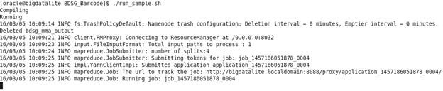
When asked type Y to view the image output. Notice how the
faces are detected in most scenes, especially when they are fully facing
forward.
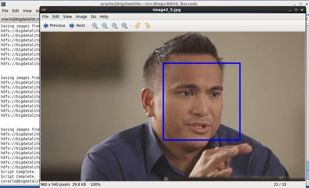
Now, explore the java source (/home/oracle/src/Blogs/BDSG_Barcode/OrdFaceDetection/OrdFaceDetectionSample.java),
configuration file (/home/oracle/src/Blogs/BDSG_Barcode/OrdFaceDetection/sample.xml),
and the hadoop jar command (/home/oracle/src/Blogs/BDSG_Barcode/run_sample.sh)
to see how this example was built.
QR Detection (ZXing) with Big Data Spatial and Graph:
Our next example will build on some of the work done in our
previous blog post, located here: https://blogs.oracle.com/datawarehousing/entry/using_spark_scala_and_oracle
Specifically, we will re-use the BarcodeProcessor.java from
the previous blog.
Run the run_QRImage.sh script to see it in action
against a video QR.mov that we’ve provided.
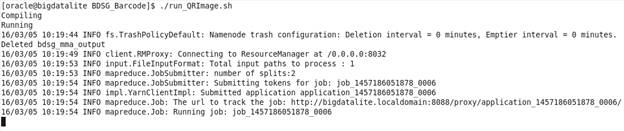
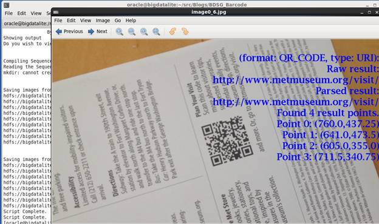
If we look at the java source code (/home/oracle/src/Blogs/BDSG_Barcode/QR/QRImage.java)
for our OrdFrameProcessor, we will see this code in the processFrame() method
showing how we are calling our BarcodeProcessor class and how we are drawing
the results on the output image:
BufferedImage bi = value.getImage();
String barcodeString ="";
try {
barcodeString = BarcodeProcessor.processImage(bi);
System.out.println("Testing. "+barcodeString);
} catch (Exception e) {
System.out.println("Key:"+key+" exception: "+e);
barcodeString = "Exception:"+e;
}
m_frame_value_text.set(barcodeString);
int width = bi.getWidth();
int height = bi.getHeight();
BufferedImage bufferedImage = new BufferedImage(width, height, BufferedImage.TYPE_INT_RGB);
Graphics2D g2d = bufferedImage.createGraphics();
g2d.drawImage(bi, 0, 0, null);
g2d.setPaint(Color.blue);
g2d.setFont(new Font("Serif", Font.BOLD, 36));
FontMetrics fm = g2d.getFontMetrics();
int y = fm.getHeight();
for (String line : barcodeString.split(" ---- ")) {
int x = width - fm.stringWidth(line) - 5;
g2d.drawString(line, x, y += fm.getHeight());
}
g2d.dispose();
m_frame_image.setImage(bufferedImage);
...
To learn more about QR/Barcode detection and the open source
ZXing library, refer to our previously mentioned blog.
Optical Character Recognition (Tesseract) with Big Data Lite VM:
Our next example will use the open source Tesseract library
to do Optical Character Recognition (OCR). Read about Tesseract here: https://github.com/tesseract-ocr/tesseract
One of your first challenges to working with Tesseract will
be installing it. We’ve taken care of installing it for you in the setup.sh
script you ran earlier, but let’s discuss what setup.sh did. Tesseract is a
C++ program. One way to install it is by downloading the source and building
it. For purposes of this blog, we decided to look for an already compiled
version of Tesseract. Given that the Big Data Lite VM runs Oracle Linux (which
uses rpms/yum like RedHat), we want to find an rpm-based version of Tesseract.
We were able to find this at the EPEL yum repository. EPEL stands for “Extra
Packages for Enterprise Linux” (you can find out more about EPEL here: https://fedoraproject.org/wiki/EPEL/FAQ
). Our setup.sh script first configures our Big Data Lite VM to know about
EPEL, then it uses yum to install and download Tesseract and its dependencies.
Tesseract also needs training data to recognize images as characters, so we
download some pre-built training data via EPEL as well.
Now that Tesseract is installed in your Big Data Lite VM,
feel free to test it out on the command line. Simply run “tesseract -help”.
As discussed above, Tesseract is a C++ open source project.
However, much of the hadoop ecosystem is more tailored towards working with java.
There are a couple of approaches to bridge Tesseract to java, such as Tess4J
and the java-cpp-presets project. This blog/demonstration shows the Tess4J
approach, although we’ve used the java-cpp-presets approach in other situations
and don’t judge one better than the other. For more on Tess4J, see http://tess4j.sourceforge.net/ . The
setup.sh script downloaded the jar files needed by Tess4J and its dependencies.
Using Tesseract with Big Data Spatial and Graph:
Now that we’ve discussed how Tesseract and Tess4J were
setup, let’s look at an example of Tesseract in a custom OrdFrameProcessor. Run
the script “run_tessImage.sh” to run against a sample video OCR.mov that
we’ve provided.
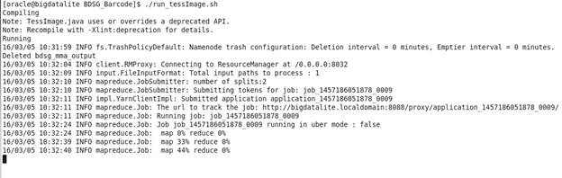
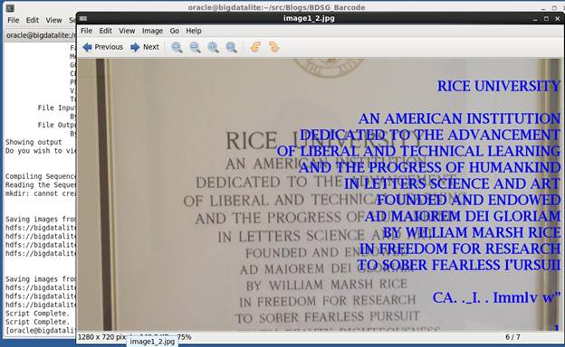
You should see that the Tesseract did a fairly good job at
identifying the characters in the frames that were grabbed from the sample
video.
Let’s look at parts of the code (/home/oracle/src/Blogs/BDSG_Barcode/TessImage/TessImage.java)
of our custom OrdFrameProcessor:
public TessImage(Configuration conf) {
super(conf);
instance = Tesseract.getInstance();
instance.setDatapath("/usr/share/tesseract");
instance.setLanguage("eng");
instance.setPageSegMode(3);
}
…
String ocrString ="";
try {
ocrString = instance.doOCR(bi);
System.out.println("Key:"+key+" OCR:"+ocrString);
} catch (Exception e) {
System.out.println("Key:"+key+" exception: "+e);
ocrString = "Exception:"+e;
}
…
Key things to highlight in the code are the necessary
Tesseract setup commands in the class constructor and the call to the Tesseract
api (instance.doOCR) in the processFrame() method.
Outputting Text Information from the framework
So far, all of our OrdFrameProcessor examples have generated
image (OrdImageWriteable) output. Our final example will show how to generate
text output.
Run the script run_tessText.sh

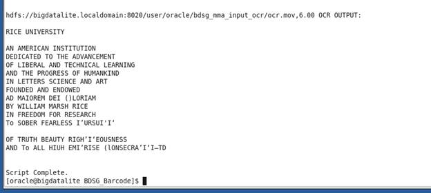
As seen above, this example saves its output as textual
data, not images.
To see how this worked, notice the changes in the xml
configuration file (/home/oracle/src/Blogs/BDSG_Barcode/TessText/tess.xml) as
well as the Tess.java (/home/oracle/src/Blogs/BDSG_Barcode/TessText/Tess.java)
class.
<property>
<name>oracle.ord.hadoop.outputtypes</name>
<value>csv</value>
</property>
<property>
<name>oracle.ord.hadoop.ordframeprocessor.v2</name>
<value>org.apache.hadoop.io.Text</value>
</property>
public class Tess
extends OrdFrameProcessor {
…
public Text getValue() {
return m_frame_value_text;
}
Moving Beyond:
Hopefully, this was a good start for your journey into Big
Data Spatial and Graph’s Multimedia Analytics Framework. Here are some
possible future paths you could take:
- You could make test the above code out with your own
movies. For instance, I used my iPhone to record some videos, copied them
onto my laptop, and then copied them into my Big Data Lite VM.
- You could get your own set of facial photos and train the
Facial Detection example to work with your own videos.
- You could explore other possibilities for custom
OrdFrameProcessor, using other features of the OpenCV or other open source
libraries.
NOTE: If you want to play around with the source
files and make modifications, you should probably copy the BDSG_Barcode
directory tree into a new directory outside of /home/oracle/src. This is
because the “Refresh Samples” utility will wipe-out the /home/oracle/src directory
every time it runs.
Conclusion:
This blog has shown you how work with and extend the
Multimedia Analytics framework that is part of Oracle Big Data Spatial and
Graph. We have explored how the Facial Recognition example works and built new
examples to do Barcode/QR detection and Optical Character Recognition.
Hopefully, this has made you more comfortable with working
with tools like the Oracle Big Data Lite VM, Oracle Big Data Spatial and Graph,
OpenCV, ZXing, Tesseract, Tess4j, and EPEL. Enjoy.
About the Author:
David Bayard is a member of the Big Data Pursuit team for
Oracle North America Sales.